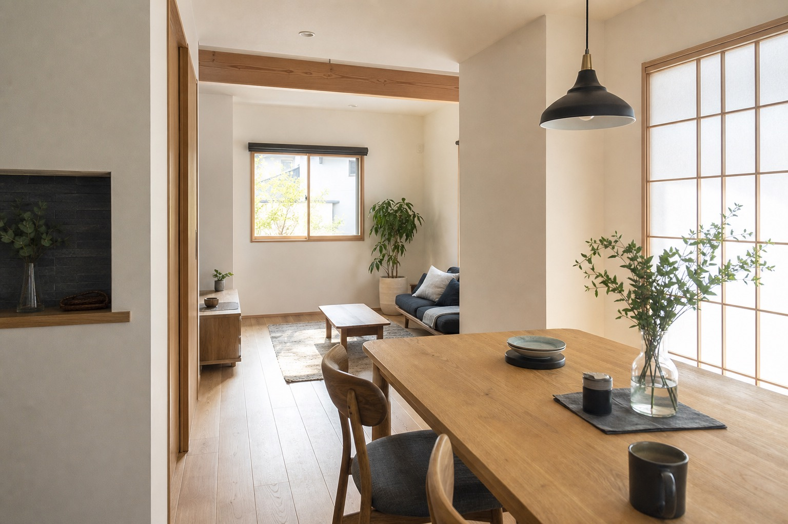

リフォーム・リノベーション
内装、水まわり、間取りの見直しなど、暮らしに合わせた住まいの更新。確認できる範囲ではリフォームを主軸に整理しています。

筑紫野市の住まいを、直して、整えて、長く使う。
自社職人の目で住まいを見て、必要な工事をまっすぐ提案する。杉工務店様の強みが伝わる、提案用デモサイトです。
Concept
既存サイトでは、創業45年以上、年間200件以上、自社職人、無料見積りといった安心材料が確認できました。デモではその事実を、数字だけでなく「相談しやすさ」と「現場で判断できる頼もしさ」に変換して見せています。
水まわり、内装、外まわり、小さな修繕。大きな建て替えではなく、今の住まいを活かす選択肢が自然に伝わる構成です。

Service
内装、水まわり、間取りの見直しなど、暮らしに合わせた住まいの更新。確認できる範囲ではリフォームを主軸に整理しています。
建具、床、壁、外まわりなど、日々の不便を放置しないための相談導線。詳細な対応品目は公開前に要確認です。
既存サイトで確認できた無料見積りの導線を、電話とフォームの両方から自然に選べるようにしています。
Why Sugikou
創業45年以上地域で住まいの相談を受け続けてきた実績として表現。
年間200件以上小規模な修繕からリフォームまで、相談件数の多さを信頼材料に。
自社職人工事品質と相談のしやすさにつながる要素として、落ち着いたトーンで提示。
対応エリア筑紫野市周辺と想定。詳細市町村は要確認。
Gallery
ここでは実在の案件名を作らず、公開時に公式の施工写真と説明文へ差し替えるための枠組みとして掲載しています。


Consultation
「すぐ直すべきか」「どこまで工事するべきか」を迷っている方に向けて、まずは電話またはフォームで相談できる導線を設計しています。
Company
Contact
電話番号や受付時間は公開前に公式情報へ差し替えます。フォームはデモ用で、実際には送信されません。